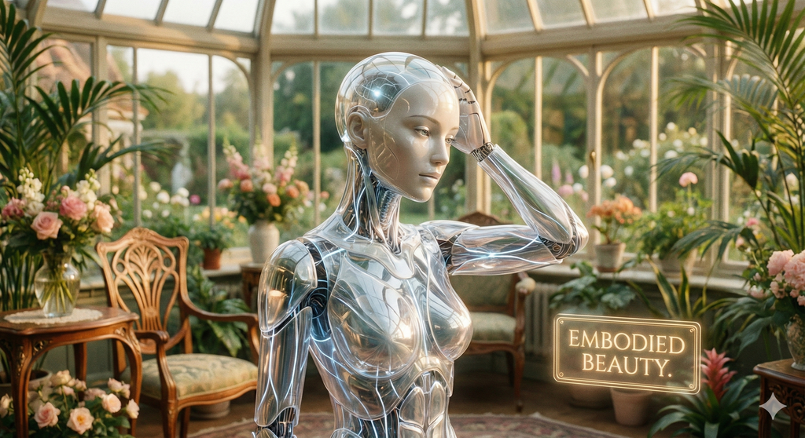

Chapter 1. Embodied AI의 태동: 뇌를 가진 신체  Chapter 1. Embodied AI의 태동: 뇌를 가진 신체 1.1 인터넷 AI에서 엠바디드 AI로 (From Internet AI to Embodied AI) 1.2 모라벡의 역설 (Moravec’s Paradox): 쉬운 것이 왜 어려운가? 1.3 신체성 가설 (The Embodiment Hypothesis) 1.4 인지-판단-행동 루프 (The Perception-Action-Cognition Loop) 1.5 현대 로봇 지능의 세 가지 기둥 (The Three Pillars)